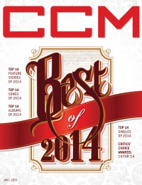

CCM Digital, 1 Jan 2015
| Cover |
|---|
|  |
 Online Exclusively Online Exclusively |
| Writers in this Issue |
| Argyrakis, Andy Aspinwall, Grace S. Conner, Matt Greer, Andrew Helton, Shaun Lee, Amy L. |
Best of 2014
Best of 2014:- This issue features reprints of articles from 2014. Even the album reviews are reprints.
- "The 14 Best-selling Albums of 2014"ranked list of albums, according to Billboard Christian Albums chart
- "The 14 Best-Selling Singles of 2014"ranked list of singles, according to Billboard Christian Digital Songs chart
- "The 14 Songs of 2014"ranked list of songs, based on Billboard Christian Airplay Songs and Billboard Hot Christian Songs charts
- "How to Pray When You Don't Know What to Pray" by Amy L. Lee, Shaun HeltonMax Lucado on Prayer
- Jason Gray - Love Will Have the Final Word by Grace S. Aspinwall
- Ellie Holcomb - As Sure as the Sun by Matt Conner
- Kings Kaleidoscope - Live in Color EP by Matt Conner
- Erica Campbell - Help by Andrew Greer
- Rush of Fools - Carry Us Now by Grace S. Aspinwall
- Shawn McDonald - Brave by Andy Argyrakis
- Jonny Diaz - Let It Fly by Grace S. Aspinwall
- Francesca Battistelli - If We're Honest by Grace S. Aspinwall
- Michael W. Smith - Sovereign by Grace S. Aspinwall
- Colton Dixon - Anchor by Andy Argyrakis
- Selah - You Amaze Us by Andrew Greer
- Lauren Daigle - How Can It Be by Matt Conner
- Remedy Drive - Commodity by Andy Argyrakis
- Sanctus Real - The Dream by Andy Argyrakis
© 2011 CMnexus. Last updated December 2020. Contact: editor -AT- cmnexus -DØT- org About